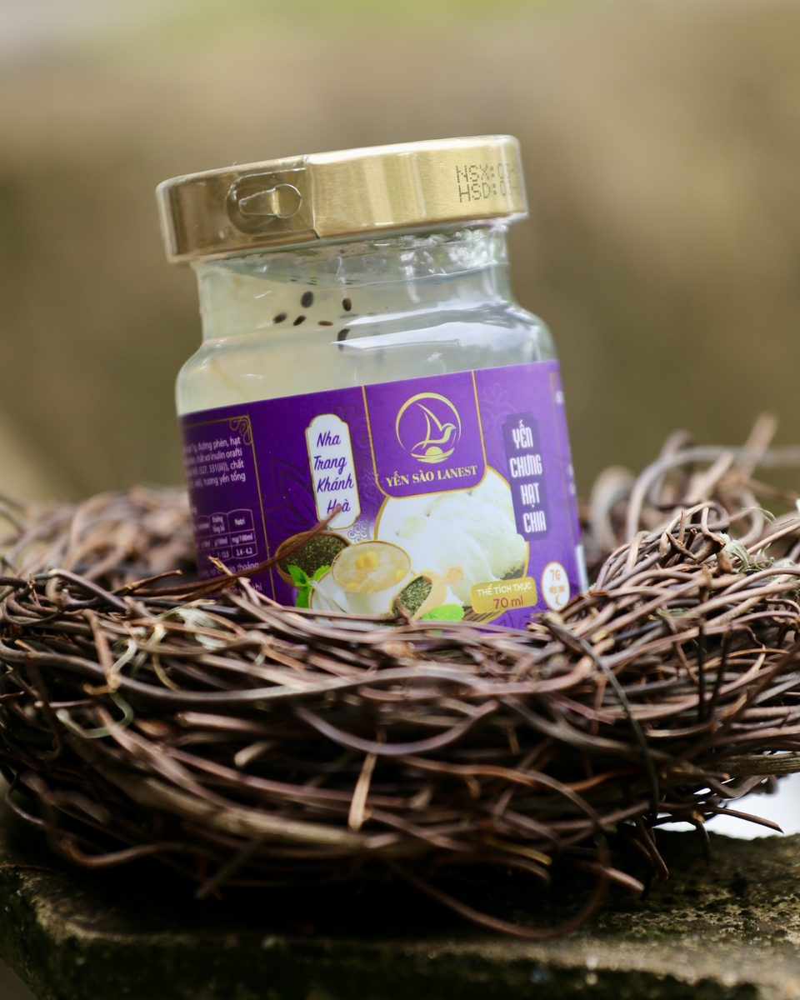
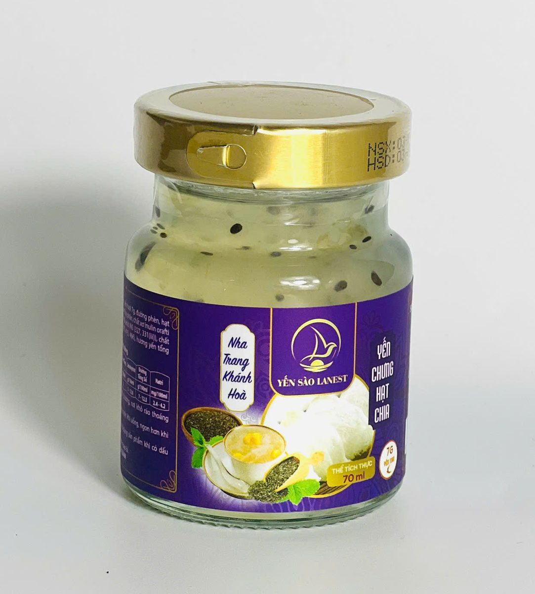

Yến Chưng Hạt Chia: Trong Hũ Có Gì, Hợp Với Ai Và Cách Dùng
Yến Sào Lanest · Đăng ngày 20/11/2026

Trong 14 vị yến hũ của Lanest, yến chưng hạt chia là hũ nhận ra ngay từ xa: nhãn tím, nước yến trong, lấm tấm những hạt đen nhỏ. Khách hay hỏi hũ này có hợp người ăn kiêng không, người tập thể thao uống được không, có giúp giảm cân không. Bài này trả lời thẳng từng câu, dựa trên nhãn và tài liệu sản phẩm của Lanest.
Hũ yến chưng hạt chia 70ml, nhãn tím, hạt chia lơ lửng trong nước yến
1. Trong một hũ yến chưng hạt chia có gì?
Yến chưng hạt chia thuộc dòng yến hũ 7g yến tươi, hũ thủy tinh 70ml. Thành phần ghi trên nhãn:
Nước, yến tươi 7g, đường phèn, hạt chia 0,12g, collagen thủy phân, chất xơ inulin orafti gr, chất điều chỉnh độ acid INS (327, 331(iii)), chất ổn định INS (401, 407, 415, 466), hương yến tổng hợp.
Hai điều nên biết khi đọc dòng này:
- Hạt chia chỉ 0,12g mỗi hũ. Lượng nhỏ, đủ cho cảm giác lấm tấm, vui miệng khi uống. Đừng xem một hũ yến như một phần hạt chia đầy đủ.
- Vị ngọt đến từ đường phèn. Hũ hạt chia không phải vị ăn kiêng. Dòng 7g có phụ gia ghi rõ trên nhãn, nên Lanest không gọi dòng này là "100% yến".
Muốn hiểu "7g yến tươi" khác "tổ yến khô" thế nào, anh chị xem bài cách đọc nhãn yến hũ.
2. Yến chưng hạt chia hỗ trợ gì, và không hứa gì
Bản mô tả từng vị của Lanest ghi yến chưng hạt chia:
- Hỗ trợ bổ sung chất xơ và omega-3, nâng cao sức khỏe.
- Hỗ trợ hệ tiêu hóa và hấp thu dưỡng chất.
- Hỗ trợ tăng cường sức đề kháng.
- Hỗ trợ cung cấp năng lượng, giảm mệt mỏi.
Bản mô tả còn một dòng "hỗ trợ kiểm soát cân nặng, tạo cảm giác no lâu". Lanest nói thật: mỗi hũ chỉ có 0,12g hạt chia và vẫn có đường phèn, Lanest không có nghiên cứu nào cho thấy uống hũ này làm giảm cân, nên không hứa giảm cân. Chuyện yến và cân nặng, Lanest đã viết kỹ ở bài yến sào có giúp giảm cân, đẹp da không.
Sản phẩm này không phải là thuốc và không có tác dụng thay thế thuốc chữa bệnh. Người đang điều trị bệnh, người cần kiểm soát đường huyết nên hỏi bác sĩ trước khi dùng thường xuyên.

Nhãn hũ yến chưng hạt chia: ô "7G yến tươi", thể tích thực 70ml, thành phần in ở mặt bên
3. Yến chưng hạt chia hợp với ai?
Tài liệu sản phẩm của Lanest gợi ý vị hạt chia cho người ăn kiêng, người tập gym, người quan tâm vóc dáng, và cả người trẻ, dân văn phòng thích kiểu đồ uống hiện đại. Để chọn cho đúng, anh chị tách nhu cầu ra như sau:
- Thích đổi vị nhưng không phải kiêng đường: hũ hạt chia cho cảm giác lấm tấm, vui miệng, vẫn ngọt thanh của đường phèn.
- Cần hạn chế đường thật sự (ví dụ đang kiểm soát đường huyết): chọn vị Đường ăn kiêng hoặc Đông trùng hạ thảo ăn kiêng, và hỏi bác sĩ trước. Xem thêm bài yến sào cho người tiểu đường.
- Người tập luyện: một hũ mát là bữa phụ nhẹ sau buổi tập. Hũ yến không thay được bữa ăn chính hay nguồn đạm của anh chị.
- Dân văn phòng muốn đổi vị trong tuần, xen hạt chia với saffron, nhân sâm, long nhãn. Bài yến chưng cho dân văn phòng có gợi ý theo từng kiểu ngày.
Bảng đủ 14 vị có trong bài 14 vị yến chưng, chọn vị nào.
4. Dùng yến hũ hạt chia thế nào cho ngon
- Lắc nhẹ trước khi uống, như hướng dẫn trên nhãn, để hạt chia và sợi yến tan đều.
- Uống lạnh ngon hơn. Nhãn ghi ngon hơn khi uống lạnh; ai thích ấm có thể chưng cách thủy lại hũ, không đun sôi trực tiếp.
- Thời điểm: sáng sớm, hoặc tối trước khi ngủ khoảng một tiếng; không uống ngay sau bữa chính.
- Dùng đều, vừa phải: người trưởng thành khoảng 2–3 lần mỗi tuần là đủ, không cần uống dồn nhiều hũ.
- Đã mở nắp thì cất ngăn mát và dùng sớm.
5. Muốn nhiều hạt chia hơn thì tự làm
Nếu anh chị thích hạt chia nhiều, sánh hơn hẳn, cách hợp lý là tự chưng ở nhà từ yến tinh chế rồi rắc hạt chia đã ngâm nở vào sau. Công thức có trong bài yến chưng táo đỏ hạt chia. Tự chưng thì anh chị chủ động luôn lượng đường. Lanest cũng có sản phẩm Yến Chia Viên Sấy Khô gồm yến và hạt chia, chưng tại nhà; chi tiết ở bài yến vụn và yến chia viên.
Còn muốn tiện, mở nắp là uống, thì hũ 7g hạt chia vẫn là cách nhanh nhất cho ngày bận.
Câu hỏi thường gặp
Một hũ yến chưng hạt chia có bao nhiêu hạt chia?
Mỗi hũ 70ml có 7g yến tươi và 0,12g hạt chia, theo nhãn và hồ sơ tự công bố của Lanest.
Yến chưng hạt chia uống lạnh hay nóng?
Nhãn ghi ngon hơn khi uống lạnh; lắc nhẹ trước khi uống. Ai thích ấm thì chưng cách thủy lại hũ, không đun sôi trực tiếp.
Người ăn kiêng có nên chọn hũ hạt chia?
Hũ hạt chia vẫn dùng đường phèn. Người cần hạn chế đường nên chọn hai vị ăn kiêng dùng isomalt và hỏi bác sĩ nếu đang điều trị bệnh.